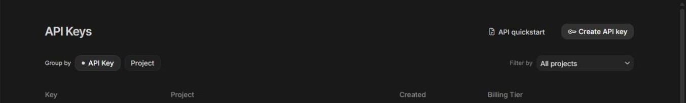
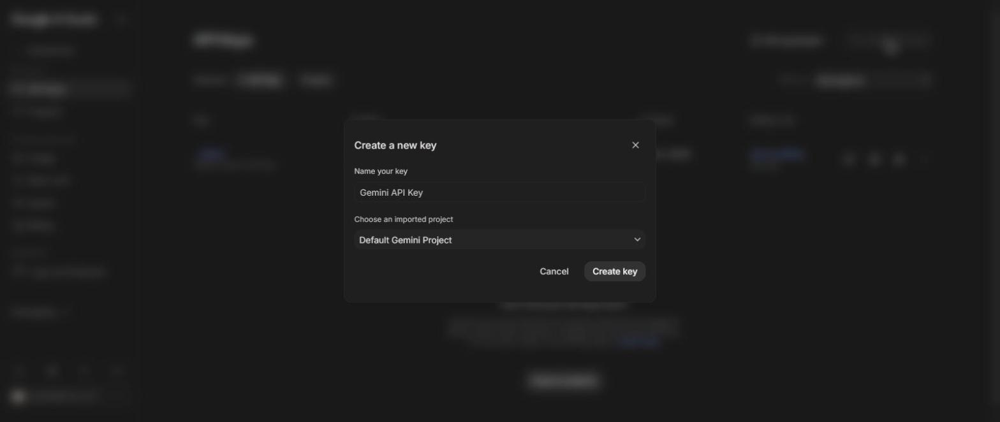

Masukkan Kode Kontrol Guru (diatur di apps-script/Code.gs, TEACHER_CONTROL_CODE).
Tentukan satu aktivitas yang wajib dikerjakan bareng semua siswa yang gabung. Siswa gabung lewat tombol Pengaturan di situs utama, masukkan kode di bawah.
Kode untuk dibagikan ke siswa (tulis di papan tulis / sebutkan):
Siswa yang sudah menjawab benar pertanyaan konfirmasi Eksperimen, atau mengirim refleksi Lab Simulasi, muncul di sini menunggu keputusanmu. Diperbarui otomatis bersamaan dengan Progres Siswa (~8 detik).
| Siswa | Topik | Tahap | Ringkasan/Refleksi Siswa | Dikirim | Aksi |
|---|---|---|---|---|---|
| Tidak ada yang menunggu konfirmasi saat ini. | |||||
Diperbarui otomatis tiap ~8 detik. ID siswa bersifat anonim (tanpa nama), digenerate otomatis per perangkat.
| ID Siswa | Aktivitas sekarang | Tingkat belajar | Terakhir lapor |
|---|---|---|---|
| Belum ada siswa yang gabung. | |||
Kelola bank soal per topik (pilihan ganda, jawaban singkat, atau esai), lalu publikasikan ke sesi kelas yang sedang aktif supaya siswa bisa menjawabnya langsung di situs.
Hanya dipakai untuk membuat soal otomatis lewat AI, tersimpan di browser ini saja. Kosongkan kalau kamu hanya menulis soal manual.
Belum punya API key? Buka aistudio.google.com/apikey, login dengan akun Google, lalu klik Create API key (gratis):


Memuat bank soal...
Belum ada soal untuk topik ini.